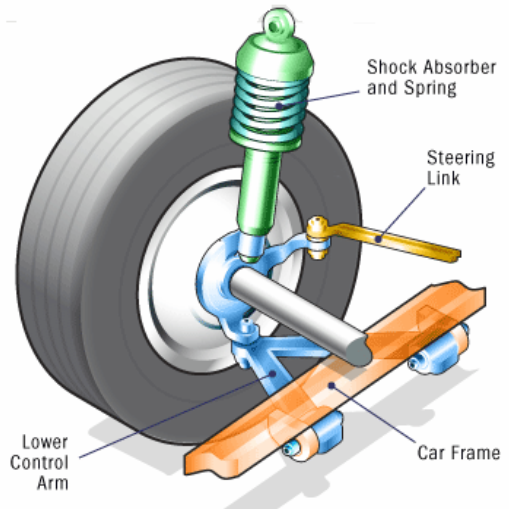
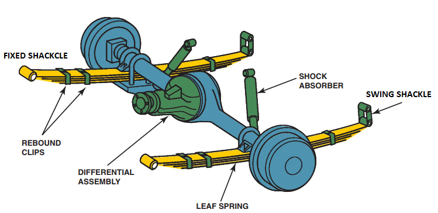
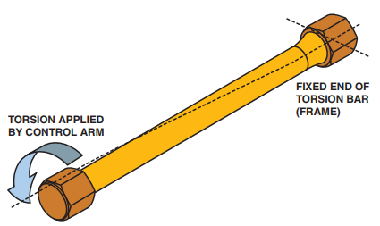

The purpose of the suspension system is to isolate the vehicle and its occupants from most of the vertical movement of the road wheels as they pass over bumps in the road surface. This ensures that the driver and passengers have a comfortable ride and the vehicle body is not subjected to excessive shocks, which could cause damage.

Figure 11.2. Major components of suspension system.
The spring absorbs road shocks and allows the wheels to follow the undulations of the road surface. This last point is important to ensure that the driver has control of the vehicle. If the road wheels leave the ground control of the vehicle is lost.
TYPES OF SPRINGS
There are four types of vehicle springs in common use. The leaf spring, the coil spring (or helical spring), the torsion bar and the air-spring.
Leaf spring
There are two types of leaf spring, the multi leaf spring and the single parabolic leaf spring shown later. Leaf springs perform a dual role. They act as springs and also hold the axle in place. Unfortunately, when used alone, they tend to be too stiff as a spring and too flexible as an axle-locating device.
Figure 11.3 is a typical example of front axle using multi-leaf springs. The front end of the spring is fixed to the chassis by means of a pin through a bracket. This is called the fixed shackle. A similar arrangement holds the spring in position at the rear; this is called a swinging shackle and is to allow for the changing length of the spring as it moves up and down.

Figure 11.3. Typical leaf-spring suspension.
Coil spring
Figure 11.4. Types of springs
Figure 11.4 is a typical coil or helical spring. The spring is formed from a single length of spring steel formed into a coil. The majority of cars and light vans use coil springs for both front and rear suspension systems for the following reasons.
It is a simple compact design, which is easy to manufacture in its many forms. The diagram shows a simple constant rate spring. Variable rate springs may be tapered or have the coils closer together at one end.
Torsion bars
The torsion bar spring is the last metallic spring to be covered. It is rarely used on cars today but has uses where limited space or suspension/ transmission design prevents the use of coil springs. It is a very simple design and it is easy to adjust the ground clearance of the vehicle.

Figure 11.5. Typical torsion bars suspension.
Figure 11.5. shows the principle of the torsion bar spring. The rate, or stiffness, of the torsion bar depends on its length and diameter. Increasing its diameter or reducing its length will make the spring stiffer and vice versa.
Air springs
The air-spring bellows are supplied by an electrically powered compressor. The individual wheel adjustment permits the lowering or lifting of the vehicle as well as a constant vehicle height, regardless of – even onesided – loading. It is also possible to counteract body tilt during cornering. The damping properties of the shock absorbers are affected by spring bellow pressure depending on the load
SHOCK ABSORBER
Shock absorbers damp or control motion in a vehicle. If unrestrained, springs continue expanding and contracting after a blow until all the energy is absorbed. Not only would this lead to a rough and unstable - perhaps uncontrollable - ride after consecutive shocks, it would also create a great deal of wear on the suspension and steering systems. Shock absorbers prevent this. Despite their name, they actually dampen spring movement instead of absorbing shock. As a matter of fact, in England and almost everywhere else but the United States, shock absorbers are referred to as dampers.
Today’s conventional shock absorber is a velocity sensitive hydraulic damping device. The faster it moves, the more resistance it has to the movement (Figure 11.6). This allows it to automatically adjust to road conditions. A shock absorber works on the principle of fluid displacement on both its compression (jounce) and extension (rebound) cycles. A typical car shock has more resistance during its extension cycle than its compression cycle. The extension cycle controls motions of the vehicle body spring weight. The compression cycle controls the same motions of the unsprung weight. This motion energy is converted into heat energy and dissipated into the atmosphere.